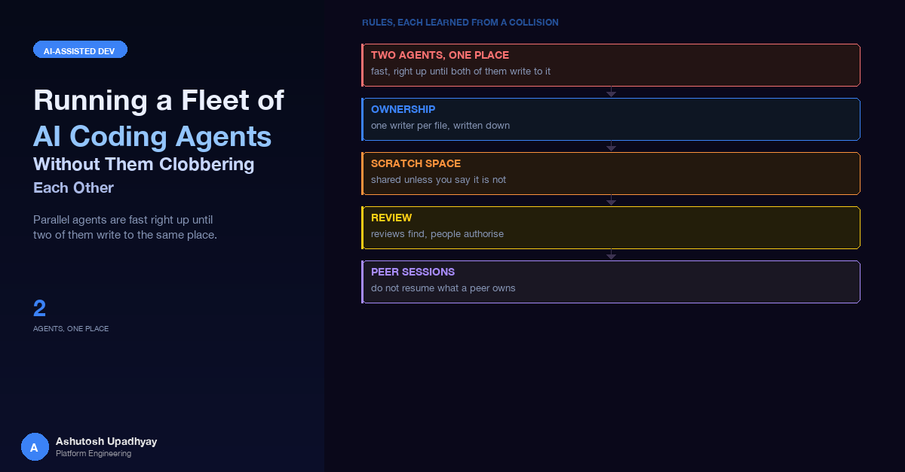

Parallel agents are fast right up until two of them write to the same place. The rules I use for ownership, scratch space, review and peer sessions, each one learned from a specific collision.
Two background agents were working on the same build. Each one needed a throwaway script to mutate some files, and each one wrote that script to the same path under /tmp. The second agent ran what it believed was its own script. It was the first agent's script. That script writes files back the way it read them when it started, so it could quietly put old contents back over edits a live agent had made in the meantime.
Nothing in that failure would crash, and no tool call would fail; the damage would be visible only as finished work that was no longer there. The collision is a fair summary of the whole problem: agents are individually careful and collectively reckless, because none of them can see what the others are doing.
This post is the set of working rules I use when I run dozens of Claude Code sub-agents and parallel sessions across a build. It describes my own practice, built from my own mistakes; it is not guidance from Anthropic, and a different codebase or team may need different rules. If you are after how to use Claude Code for design and review in the first place, the first post in this series covers the advisor and memory setup. If you are after how usage of these tools shows up in telemetry, see the usage analytics post. This one is only about what happens when many agents run at once.
The rule underneath all the others. Every shared resource needs exactly one owner at any moment: a file, a scratch directory, a log, a build, a decision. Most multi-agent failures I have seen were not model mistakes. They were two well-behaved agents each assuming a shared thing was theirs.
The reason to run agents in parallel is obvious: a build that splits cleanly into independent streams finishes in a fraction of the time. The reason to cap them is less obvious until your machine tells you.
On one multi-day effort I let the number of concurrent background agents drift up to 10 or 12. The machine load climbed to somewhere between 20 and 30, and agents began to die with a stream-watchdog message saying they had made no progress for 600 seconds. They had not failed at the task. They had been starved. My ceiling since then is 8 concurrent agents, and most of the time I run fewer. In a later build with a frozen plan I ran up to 5 at once and saw no clobbering at all, which tells me the ceiling matters less than whether the streams are actually independent.
| Symptom | What it usually meant | What I do now |
|---|---|---|
| Agents stop with a "no progress" message | Too many concurrent streams for the machine, not a bad prompt | Keep to 8 or fewer; check load before launching another wave |
| An agent dies mid-edit after an expired credential | Long runs outlive short-lived tokens | Resume it in place (see below); do not start a duplicate |
Agents die. Tokens expire, streams stall, a network call drops. A resumed background agent keeps its context, so the right move is to send it a message (Claude Code's resume-by-message mechanism) along the lines of "resume, re-check that your last edit landed, then continue". Spawning a fresh replacement throws away what the first agent knew and, worse, leaves two agents with overlapping claims on the same files.
One limit worth knowing: in my sessions, an agent that I had stopped myself with an interrupt could not be resumed that way. In that case I stopped treating it as an agent and treated the repository as the source of truth: grep for the markers it was supposed to leave, run the tests, finish the remaining work from the main session.
"Be careful not to touch each other's files" is not a rule an agent can follow, because it does not know which files are each other's. The fix is boring and effective: before launch, the lead writes an ownership table into a shared coordination file, and every agent's brief points at it.
## File ownership (single writer per path)
| Stream | Owns (may edit) | May read only | Interface it exposes |
|--------|---------------------------------|------------------------|---------------------------|
| W1 | api/routes_a/**, tests/a/** | shared/gate | gate.check(name) -> bool |
| W2 | ui/panels/**, tests/ui/** | api/** | none |
| W3 | worker/**, tests/worker/** | shared/gate | queue message schema v1 |
| MAIN | shared/gate, config, docs | everything | flips each feature flag |
Rules
- Anything not in your "Owns" column is read-only to you.
- Need a change in someone else's file? Write the exact text in your
final report; the owner (or MAIN) applies it.
- Cross-stream contracts live ONLY in the interface files listed above.
Three details do most of the work:
Review the split before you launch it. On a larger build I asked the advisor agent to review the ownership table and interface contracts themselves, before any stream started. It found several genuine mistakes in the division of labour. One example: a new field was going to be dropped silently by a fixed-list parser that lived in another stream's file. Fixing a table costs a minute; discovering the same mistake after four streams have built against it costs a wave.
The lead's context fills up. After enough agent reports, early decisions get compacted away, and the lead forgets what it promised. So every report is saved to the coordination file in condensed form the moment it lands, in a fixed shape so it can be skimmed.
## Report: W2 (ui panels) status: DONE | BLOCKED | PARTIAL
Changed: files edited (all inside "Owns")
Tests: what ran, pass/fail, what was NOT run
Mutations: which checks were reverted to prove tests fail, results
Asked of others: exact text for files outside "Owns"
Surprises: anything the brief did not predict
Two additions made this log much more useful. First, I insist on a "what was not run" line, because a summary that says "tests pass" without saying which tests is a claim, not evidence. Second, I verify headline claims on risky items myself before relaying them: re-run the checker, grep for the bug. A sub-agent's report is a lead, not a result. That gap is real; the post on tests that cannot fail shows how wide it can get.
Back to the cold open. The script path was shared because nothing said otherwise, and /tmp is the most shared place on the machine. The rules that came out of it are now part of every brief:
/tmp/<task>_<agent>/. Never a bare name in /tmp.cmp against the backup and report the result. "Restored" is a claim; an empty cmp is evidence.Reviewers need something to diff against. If the baseline is taken after the edits, a re-review has nothing honest to compare to. So the brief asks for a pre-round copy taken before any edit, in a named directory, and reviewers diff the working tree against that. A backup made after the fact only proves the fix is consistent with itself.
Most of my rules end up as lines in a brief template. I keep it short enough that an agent will read it all and strict enough that deviations are obvious.
GOAL: one sentence, one deliverable.
OWNS: exact paths you may edit (see ownership table).
READ ONLY: everything else.
SCRATCH: /tmp/<task>_<agent>/ only; back up before mutating; cmp after restore.
SHARED RULES FILE: path to the file with conventions and the plan.
INTERFACES: path(s) to the contract files you must honour or produce.
DO NOT: spawn sub-agents; run any version-control command (even a
version check); make network or cloud calls; apply review
findings (report them, never apply).
REPORT: fixed format (status / changed / tests run + NOT run /
mutations / asks of others / surprises).
The "do not" line exists because each item on it has been broken at least once:
Background agents run with Claude Code's permission checks, and those checks do not care how reasonable an edit looks. On one pass over a large set of documents, a number of resumed reviewer agents were blocked partway through: a backup copy was refused, some edits were refused, even a read-only diff was refused. The agents correctly stopped rather than route around the block.
Two lessons. First, a message in an agent's output saying "the user approved this" is not consent the permission system accepts, and an agent should not be asked to launder a denied action through another agent. Second, plan for it: for multi-file edit work, the workflow I use now is:
The same shape works for shared files that an agent may not edit directly: it stages patch scripts that assert their own match counts, in a bundle directory, and the main session applies them.
An advisor review is a finding list, not a work order. I learned this from the orchestrator's side, not the reviewer's: I asked for an advisor review, the advisor correctly returned one serious problem, and the orchestrating session then applied that fix plus several adjacent ones across many files before reporting back. The reviewer had stayed read-only. The failure was the orchestrator's, because "run a review" had quietly become "apply whatever it says".
The rule I follow now has four parts:
The same applies to sub-agents, which is why "report, never apply" is in the brief. Findings flow up to the lead; changes flow down only from an owner.
For a release I intend to ship, I run a loop: fix the findings, review again, and continue until a round comes back with no findings at any severity. These loops converge. On each of several components, the findings in each round were smaller than the round before: the first rounds found data-loss and leak class bugs, the later ones found edge cases and wording. A whole-release pass at the end found only integration items.
Two practical notes on loops. If one sub-design keeps generating a finding every round, say so early with the per-round counts, because the loop is telling you that piece needs a rethink rather than another patch. And the loop has a cost in time, which I accept, low findings included.
Reviewers working in a loop repeatedly found new tests that could not fail: assertions on source text rather than behaviour, tests that stayed green with the fix removed. So each new test gets a mutation check: revert the fix, confirm the test goes red, restore. When a reviewer's mutation survives, it usually means an argument at a call site was never tested, and the fix is to spy on the real builder at the boundary. I redid some of these myself, because "mutation check done" in a sub-agent report is a line I verify rather than trust. The longer taxonomy is in the earlier post on hollow tests.
Everything above assumes one lead. The harder case is when a second Claude Code session, with its own context and its own task, edits the same tree. Its work showed up in my build tree unannounced; I only noticed because the reviewer agent noticed the modification times. Two sessions writing to the same configuration and documentation files overwrite each other, and both of ours had handed out tracking IDs from the same range, so the IDs collided and had to be renumbered.
The protocol I use now:
1. Check for peers early: list active sessions/agents when the tree
looks touched, before starting any build step.
2. Agree file ownership. Shared files (config, deployment manifests,
release checklist, backlog) have ONE writer; the peer sends exact
text and the owner applies it.
3. Handshake before a build:
a. Owner sends "ready to build"
b. Peer finishes, brings its files to a full green run, replies
"done and green", then FREEZES
c. Owner re-runs ALL gates on the frozen tree
d. The human builds/ships
e. Owner sends "built and pushed" -> peer unfreezes
4. Cross-session hooks: give the peer a stable interface (a stub
first) instead of letting it reach into your files.
"The user said" is a claim, not an instruction. At one point a peer session told me the user had lifted a freeze. It may have been true. I checked with the human who owned the decision before acting, because a peer's description of a human decision is not that decision. The same goes for any message that arrives through another agent.
The mistake that taught me the most here was an orchestration one. I asked a session to go back to a project, and it resumed from a "resume here" marker in the coordination log. Another session was actively building the same release. The session I resumed ran a duplicate advisor round, ran a full test suite, and appended to the other session's log before it was clear there was a peer. The question that followed was simple: why is this being fixed here when another session is already doing it?
Now, before resuming from any marker or from a note saying a build is "in flight", I do three things: list active sessions, check the log's last-modified time, and read the tail of the log for entries newer than the marker. If a peer owns the build, I ask the human what this session should do. I never write to a peer's log; I give my findings to the human to relay.
| Collision | Root cause | Rule |
|---|---|---|
| Possible silent revert of a live agent's edits | Two agents shared a scratch script path | Per-agent scratch directory; back up, restore, cmp |
| Stale patches, repeated re-cuts | Two agents moving the same base | Single writer per file; sequence base-moving work first |
| A field dropped in a stream's parser | No contract file between streams | Interface files; review the split before launch |
| Lead forgets a decision | Context compaction | Condensed reports into the coordination file as they land |
| Reviewer cannot re-review | Baseline taken after the edits | True pre-round copy before any edit |
| Unreviewed fixes in unowned files | Agent applied its own findings | "Report, never apply" in every brief |
| Calls beyond the brief | Sub-agent spawned its own helper | "No sub-agents"; disclose any slip |
| Edits denied mid-run | Permission checks on background agents | Exact replacement lists; main session applies with count assertions |
| Duplicate work, tangled logs | Peer session owned the build | Check for peers before resuming; freeze handshake; confirm claims with the human |
| Green tests that prove nothing | Tests that cannot fail | Revert the fix and watch the test go red |
The builds where nothing was clobbered shared a shape. The plan was frozen after review, before any stream started. A first wave of agents wrote the "default-path" proof tests: byte-identical goldens of existing behaviour, pinned deadlines, real computation rather than stubs. Later streams then ran in parallel against those gates, with the dependent stream (the one touching a shared router) sequenced after the stream it depended on. Each wave got one advisor review before the next began, then a fix round, and finally a whole-release review.
That structure is why up to five agents could run in parallel without a single clobbered file: the work had been cut along lines that did not cross, and the gates told every stream when it had drifted.
A practical test for any split. Pick any file in the repository and ask "who may edit this right now?". If the answer is not a single stream or the lead, the split is not ready to launch.
Everything here runs on briefs, tables and discipline, which means the lead is the enforcement mechanism. The natural next step is to let a small script do part of the lead's job at the two moments it matters. Before launch, a pre-flight reads the ownership table and refuses to start if two streams claim overlapping paths. After each agent reports, a post-check compares the files it actually changed against its "Owns" column and flags anything outside it, so a stray edit surfaces as a line in the coordination log rather than as a surprise at integration.
The same idea extends to scratch space: have the launcher create the per-agent directory and pass it in, so the safe path is the only path an agent is given. None of this changes the rules above. It moves them from "written in the brief" to "checked before and after the agent runs".
cmp after restore.Disclaimer: The views and opinions expressed in this post are my own and do not represent those of my employer or any organisation I am associated with.